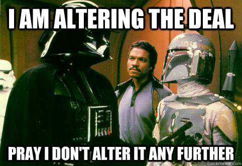

There are some days when you feel like your work is pointless, void, and without meaning. But thankfully, there are also a very few days when you feel and know that you actually made a difference. By working in data science, and more broadly in software engineering, it is particularly easy to lose a sense of purpose and become overwhelmed by the sheer amount of bullshit that tends to plague our profession. However, I have never felt more helpful than when I contributed to canceling a small contract of 5.5M€ with a very large and influential consulting firm. All the events described here happened in only a couple of months with two distinct phases.
The First Nail In The Coffin
On a very innocent day, I was innocently asked by my manager to start working on a high-profile / potentially political subject with the DevOps teams. It was mostly about framing a use case because they were willing to use AI (of course) to analyze their tickets and improve their workflow. As I was frequently collaborating with other DevOps people, it made sense for me to be onboarded on this subject. Thankfully, my manager and I were both on the same page, as it clearly seemed like a classic case of someone committing the heinous crime of bootstrapping ChatGPT on everything because AI is going to solve all our problems, right? So we decided I was just to do a little bit of data analysis on those tickets to see if it could provide the insights they were looking for, and hopefully avoid a complex over-engineered system. And here I have to make a side note, because I am fortunate enough that my current manager is a technical person and she shares a similar aversion to bullshit as I do. If you are under the type of person that tends to jump on every shiny hype, because they are addicted to LinkedIn posts, you have my deepest sympathy.
As you probably guessed from this portrait, this use case ended fairly simply. They even already had a few rules to extract information from tickets based on a few regexes. I just re-used these, made them a little more generic, sprinkled a few visualizations, added one logistic and one linear regression, talked with the DevOps managers and higher-ups, and… that was it. That was all they needed.
I learned only a few weeks later that this subject was under a lot of scrutiny because the big consulting firm was attempting to embezzle a few million from us. They were attempting to sell an AI-based system to automatically analyze those tickets, promising high ROI, better synergy, and faster treatment times before they even started working. Obviously, they were going to request a lot of money for this high-end con service.
So my little shenanigans already showed in broad daylight that their solution was completely unnecessary. And I have to insist on something crucial here, there was nothing I did here that was outside of the scope of the second or third week of your average data science bootcamp. Plain simple. And mind you, I also was blissfully unaware of the stakes surrounding the whole project. In my little head, I was just trying to see if by properly framing the project and producing simple analysis we could avoid a typical case of over-engineering. But this was only a nice start.
The Second Nail In The Coffin
The second part of this rant is a follow-up to some events described at the end of this post, where a coworker and I had the pleasure to audit an outstanding piece of garbage code produced by this big player of the consulting world. Some people in our organization wanted to gauge the quality of the work done before the potential renewal of their contract. The one-page report we produced was basically a call for a human sacrifice to appease the wrath of the gods in the face of the insanity they dared try to release in the wild and call a product.
Little did I know that around the time of the audit, these highly skilled fraudsters/consultants were basically trying to play a particularly wicked game. The first part was to convince us that the garbage proof of concept they hacked together was unlikely to scale because of communication and hand-over issues, or poor performance of our infrastructure (it’s Google’s BTW…), or because of the alleged lack of skills of our in-house data scientists. Or all of them, because then blame-shifting becomes so much more effective. But the second and most appalling part was that they were also trying to renew their support contract with our firm. And as you can already guess from the title, they were not talking pennies. No, they were talking multi-year support to fully integrate their crappy piece of work in our environment, and I don’t know how many full-time engineers.
Fortunately, sometimes organizations and companies manage to work in a seemingly reasonable and sensible way, and our little report calling their bullshit managed to find its way to some part of the higher management. This included some of the people that intended
By the way, if you ever feel uneasy about your salary, just know that this particular consulting firm charges around 1000€/day for a junior and 5000€/day for the “seniors”, and that was probably a discounted price because our firm was a large customer. Yet in the best-case scenario, which in our case meant 1 junior and at least 2-3 seniors managed to produce a machine learning code for which:
- Predictions take more time than the training (on a similar amount of data).
- None of them even thought about looking at the logs they themselves wrote.
- None of them thought about looking at the CPU / RAM load which is 2 clicks away in the GCP console.
- None of the seniors even bothered to look at the junior’s code in case there was something bad.
So if you have impostor syndrome, believe me, you’re probably fine.
Consequences And Lessons
As you can imagine, these two events were more than enough to give a cold shower to even the most hot-headed executive. I had the chance to be in the meeting where we drilled down the big firm consultants back to the 7th circle of hell, and I have to admit the feeling was sensational. Their contract that was supposed to end promptly after was not renewed and we managed to send the goblins back into their den at least for a while. Hurray! And we saved 5.5M€ from their wretched hands! Hurray!
Nonetheless, even though I feel very good about being one of the main reasons why this contract was canceled, and as you are now aware, I had no understanding of the higher stakes in the first story and a somewhat approximate idea of what was unfolding in the second. Partly because big companies are terrible with their power structure and information channels, and purposely tend to keep their employees in the dark. There was definitely quite a bit happening behind the curtains. Interestingly, some people had an agenda on our side, by trying to kick out the big consulting firm (make no mistake they absolutely deserved it) to retrieve the horrendous product, and improve it quickly, in order to gain some reputation, appear as day savior and maybe even secure some funding. It’s all jolly good fun in the political games!
Besides the politics, what do you gain from helping your company save a few million bucks? Well, probably not so much relative to the actual amount at stake. In my case, I was precisely voicing some clear complaints about what HR called a “raise”: a little bit more than 2% increase while being underpaid by about 10-20%. These little events clearly helped with my negotiation, but no matter the amount I should receive in the near future, it will be very little in comparison. That being said, if a freelancer had done the same, I doubt they would have received anything but granted they would already be paid much more. On the other side, higher management probably did not receive much either, as the magic of HR, budget constraints, and already decided budget lines works against them too, forcing them to play the type of political games described before. Similarly, I highly doubt that any higher executives will buy themselves a Maserati or a stupid Tesla, after suddenly some budget “suddenly” got freed… In the end, it does not really matter.
Am I happy with this? That’s a stretch. Let’s say that for the time being I am satisfied with this status quo. The thoughts of becoming freelance appear more and more frequently in my mind, but for now, they are being toned down by a few things. Searching for an apartment around these parts of Europe is definitely easier with a stable paycheck. Also, the technical level of my current team is quite high, which is quite stimulating. I am also quite unaware of how the current US trade war will impact and reshape the tech scene, and how it might impact freelance opportunities. My spider sense is tingling with visions of budget cuts, but maybe I am being overly callous here, and my own pessimistic nature is showing.
In the end, only one important thing remains:
Why Should You Hate Consultants?
Because everyone in their right mind should. The primary reason behind their dreaded existence is to repeat to their clients what all their other clients are doing (who spoke about large-scale industrial spying?). But my major beef with them comes from their sheer technical incompetence coupled with their propensity to wrap everything in pseudo-argumentative bullshit that for some reason seems to really appease the anxiety of the average CEO. It is even worse when you factor in their business model which relies largely on sending junior consultants while pricing them as if they were seniors.
These PowerPoint virtuosos are one of the reasons why all the big companies tend to have the exact same strategies. Did you ever wonder why they all decided to brand themselves as “agile” while being neck-deep in month-long procedures? Or why in the end of the 2010s all the big industrial players suddenly started spawning a subsidiary responsible for their “digital and data transformation”? Why so many of them decided to bring back the worst of waterfall combined with the worst of scrum under the infamous man-made horror called SAFe when they failed at actually being agile? Why when OpenAI and ChatGPT skyrocketed, each company was suddenly sitting on billions of dollars in the form of data and how AI is going to liberate and enable this value?
Because of the chronic intellectual inbreeding of the strategy consulting groups who repeat pretty much the same mantra to all their clients. Each of them being so caught up in the Fear Of Missing Out on an opportunity (whose actual value does not appear to be questioned anywhere…), that they will happily burn 100’s of millions of dollars in contracts, transformations, and reorganization.
Consultants have the ears of executives, speak the same language they do. They creep up inside every large institution thanks to their ever-growing large phone book. Be careful, they have honed their skills in plausible but empty bullshit talk and use their full reputation to distort reality with their lvl. 20 halo effect.
Save yourself, save your friends, save the planet, keep the goblin consultants at bay.